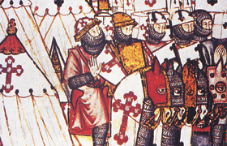

Lezione 8  Crociate
Crociate

Il brano che segue è tratto dall’Alessiade, libro che racconta la vita dell’imperatore bizantino Alessio Comneno, scritto dalla figlia Anna nel 1148.
Per difendersi dall’avanzata turca, Alessio Comneno chiese inizialmente aiuto all’Occidente, poi temette l’ambizione dei capi latini e l’invasione dei crociati.
Nel brano vengono descritti la fama dei crociati e il loro arrivo a Costantinopoli. Con il termine “Franchi” l’autrice intende i “crociati”. In questo modo essi venivano chiamati in Oriente.
«Alessio venne a sapere per fama dell’arrivo dell’esercito dei Franchi. Egli ne temeva l’invasione, perché sapeva la loro impetuosità violenta e la loro mobilità di umori, e tutte le loro fantasie, che sono inerenti al loro temperamento ardente. Infatti sono affamati di ricchezze e qualunque pretesto è buono per loro per violare i propri impegni. Quindi aveva presenti alla mente questi motivi di apprensione.
[…] I Franchi arrivarono a fiumana, dovunque, con armi, cavalli e tutto il loro equipaggiamento guerriero. Fu tale la loro rapidità e il loro ardore, che calpestavano tutte le vie pubbliche. Coi soldati franchi, marciavano donne e ragazzi, che avevano ugualmente lasciato il loro paese, innumerevoli come le sabbie e le stelle, tutti inalberando la croce rossa sulla spalla. Venivano verso di noi seguendo i fiumi, specie attraverso la Dacia. La loro moltitudine era preceduta da nubi di cavallette, che, risparmiando le messi, si attaccavano solo ai vigneti: questo prodigio significava, secondo gli indovini, che l’esercito dei Franchi, risparmiando i cristiani, sarebbe stato grandemente funesto ai barbari israeliti, dati a Bacco ed al vino».
(Anna Comnena, Alessiade, X, 5, dalla traduzione francese di J. Calmette, Textes et documents d’Histoire, II, Moyen Age, Paris, 1953, in Giorgio Spini, Disegno storico della civiltà, Vol. 1, Edizione Cremonese, Firenze, 1989)